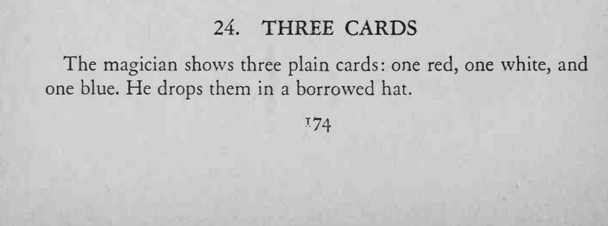
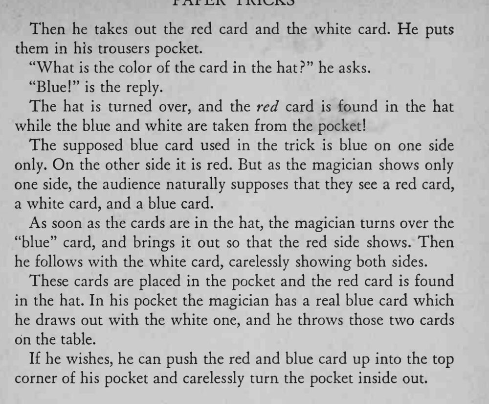

红、白、蓝三张牌丢进帽子，取走红白两牌放进裤袋后，帽里只剩蓝牌；倒转帽子却倒出红牌，而蓝、白两牌出现在裤袋里。
双面牌翻面必须在帽子里完成，取白牌时可自然亮出两面，观众才不会起疑。


The magician shows three plain cards: one red, one white, and one blue. He drops them in a borrowed hat. Then he takes out the red card and the white card. He puts them in his trousers pocket. "What is the color of the card in the hat?" he asks. "Blue!" is the reply. The hat is turned over, and the red card is found in the hat while the blue and white are taken from the pocket! The supposed blue card used in the trick is blue on one side only. On the other side it is red. But as the magician shows only one side, the audience naturally supposes that they see a red card, a white card, and a blue card. As soon as the cards are in the hat, the magician turns over the "blue" card, and brings it out so that the red side shows. Then he follows with the white card, carelessly showing both sides. These cards are placed in the pocket and the red card is found in the hat. In his pocket the magician has a real blue card which he draws out with the white one, and he throws those two cards on the table. If he wishes, he can push the red and blue card up into the top corner of his pocket and carelessly turn the pocket inside out.